Distributed Counter System Design
Sharded Counter
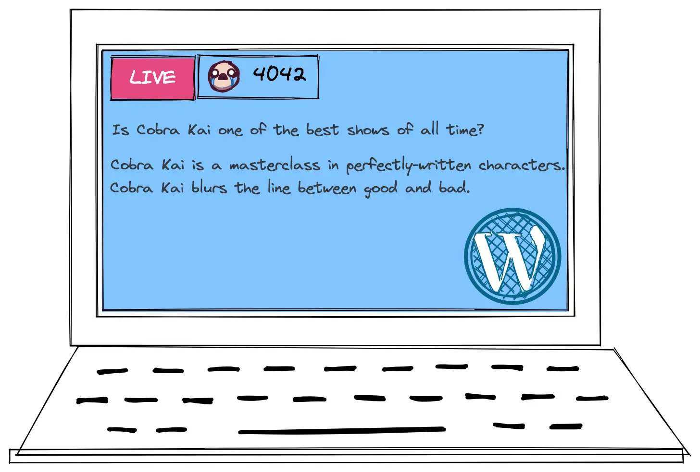
The target audience for this article falls into the following roles:
- Tech workers
- Students
- Engineering managers
Disclaimer: The system design questions are subjective. This article is written based on the research I have done on the topic and might differ from real-world implementations. Feel free to share your feedback and ask questions in the comments.
The system design of the Distributed Counter depends on the design of the Real-Time Platform and Real Time Presence Platform. I highly recommend reading the related articles to improve your system design skills.
Download my system design playbook for free on newsletter signup:
How Does the Distributed Counter Work?
At a high level, the distributed counter performs the following operations:
- gateway server shows the distributed counter to the users through WebSocket
- heartbeat signal can be used to drain the inactive WebSocket connections
- counter data type in a CRDT-based database is used to implement the distributed counter
Terminology
The following terminology might be helpful for you:
- Node: a server that provides functionality to other services
- Data replication: a technique of storing multiple copies of the same data on different nodes to improve the availability and durability of the system
- Data partitioning: a technique of distributing data across multiple nodes to improve the performance and scalability of the system
- High availability: the ability of a service to remain reachable and not lose data even when a failure occurs
- Fault tolerance: the ability of a service to recover from a failure without losing data
- Gossip protocol: peer-to-peer communication protocol that is based on the way epidemics spread
- Vector clock: data structure used to determine the causality of the events in a distributed system
- Quorum: minimum number of votes that a distributed transaction has to obtain before its execution in a distributed system
What Is a Distributed Counter?
Social networking platforms such as Reddit show the total count of users currently viewing a particular post in real-time using a distributed counter. The value of the distributed counter changes when users enter or exit the website.
The distributed counter should be scalable for use in an internet-scale website. The eventual consistency of the distributed counter does not affect the user experience. The distributed counter is a versatile data structure and is typically used for the following use cases 1, 2, 3:
- count the active users of a website or Facebook live video
- count the Facebook likes or reactions
- count the followers of a user on a social networking platform such as Twitter
- count the comments on a post on a social networking platform
- count the events in a monitoring service
- count the recent user activity in the fraud detection system
- count the visits by a particular user for rate-limiting
- count the items viewed or bought by a user in the recommendation service
- count the total visits on every web page of a website to identify the trending web pages
- count the cars available on ride-sharing platforms such as Uber
- count the votes in a real-time voting system
Questions to Ask the Interviewer
Candidate
- What are the primary use cases of the distributed counter?
- Is the website public facing?
- What is the total count of users on the platform?
- Is the system highly concurrent?
- What is the average amount of concurrent online users?
- What is the expected peak traffic?
- What is the anticipated read: write ratio of the distributed counter?
- Should the distributed counter be strongly consistent?
- Should the value of the distributed counter be approximate?
- Are there any limitations to the storage of the distributed counter?
- What should be the operational complexity of the distributed counter?
Interviewer
- The distributed counter should display the active users on a website in near real-time
- Yes, the website is general public-facing
- 1 billion
- Yes, the system must support extremely high concurrency for write and read operations
- 100 million
- 300 million concurrent users
- 10: 1
- No, the distributed counter can be eventually consistent as it does not affect the user experience
- No, the distributed counter should be accurate
- The storage used by the distributed counter should be as low as possible
- The operational complexity should be kept minimum
Requirements
Functional Requirements
- The total count of users currently viewing the website or a particular web page should be shown by the distributed counter in real-time
- The value of the distributed must decrement when a user exits the website
- The user receives the count of unread notifications when the subscribed web pages are modified
Non-Functional Requirements
- Highly Available
- Eventually Consistent
- Accurate
- Reliable
- Scalable
- Low Latency
Distributed Counter API Design
The distributed counter exposes the Application Programming Interface (API) endpoints through Representational State Transfer (REST). The WebSockets or Server-Sent Events (SSE) can be used as the real-time communication protocol 4, 1.
How to fetch the value of the distributed counter?
The client executes an HTTP GET request to fetch the value of the distributed counter.
|
|
The server responds with status code 200 OK on success.
|
|
How to update the distributed counter?
The client executes an HTTP PUT request to update the distributed counter. The PUT method is used because of idempotency.
|
|
The server responds with status code 200 OK on success.
|
|
Further system design learning resources
Download my system design playbook for free on newsletter signup:
Distributed Counter Data Storage
A 64-bit signed integer can be used to initialize the distributed counter. The key of the distributed counter can be a string of up to 128 printable characters 4.
Distributed Counter Data Schema Design
The major entities of the relational database are the users table, the pages table, and the counter table. The users table contains information about the author of the web page. The pages table stores the metadata of a particular web page. The counter table persists the count statistics. The relationship between the users and the pages' tables is 1-to-many. The relationship between the pages and the counter tables is 1-to-many 1.
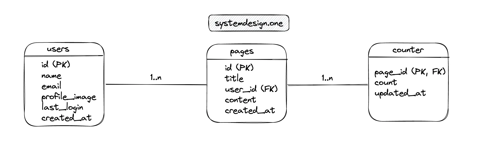
The data stored in a relational database is normalized to reduce data redundancy and save storage costs. The drawback of data normalization is that the read operation is relatively expensive due to the need for table JOIN operations.
Write a SQL query to fetch the count for a particular web page
|
|
Write a SQL query to update the counter
|
|
On the contrary, the data persisted in a NoSQL database such as Apache Cassandra is denormalized. The query operations are faster at the expense of data redundancy 1.
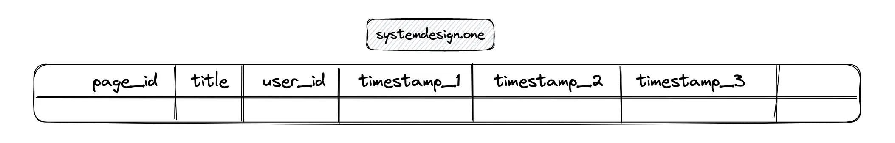
A row in Cassandra can persist the count statistics for a particular web page. A new column based on the timestamp is appended to the Cassandra table to store the recent counter value.
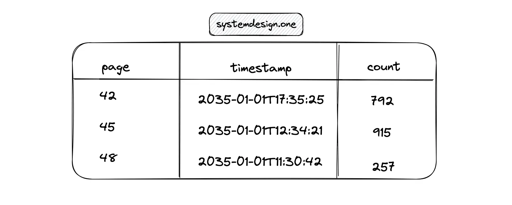
Redis is an in-memory distributed key-value database. The hash data type in Redis can be used to store the count statistics for a particular web page 5.
Type of Data Store
The following design considerations should be kept in mind for choosing a database to implement the distributed counter 1:
- The database offers high performance on reads and writes
- The database is scalable, durable, and highly available
- The database should support a flexible data model for easy future upgrades
- The learning and development costs should be minimum
The database is a critical component of the distributed counter. The potential types of data stores for building the distributed counter will be discussed in the next section.
Distributed Counter High-Level Design
The domain-driven design principles should be followed to build the distributed counter. In layman’s terms, the optimal technology should be used to construct the distributed counter instead of choosing the technology you are most familiar with. For example, you should not use MapReduce to create a production-ready distributed counter only because you are experienced with MapReduce. The development and operational costs should also be considered when designing the distributed counter 1.
Probabilistic Data Structures
A naive approach is to initialize a hash set for each web page to track the count of active users. The user IDs can be persisted in the hash set. The hash set offers constant time complexity to fetch the cardinality (count) at the expense of increased memory usage. The bitmaps data type in Redis drastically reduces the storage requirements. A new bitmap can be initialized every minute to track the count of active users. However, bitmaps will also consume a considerable amount of memory when the cardinality is significantly high 6, 7.
The HyperLogLog data type can be initialized as the counter for a space-efficient but inaccurate counter. The major limitation of HyperLogLog is that the deletion operation is not supported 6. Alternatively, the count-min sketch data type in Redis can be used to determine the count of active users across multiple web pages in a space-efficient method. However, the counter returned by the count-min sketch is also approximate and the counter cannot be decremented.
In summary, probabilistic data structures offer a space-efficient but inaccurate counter. Hence, probabilistic data structures should not be used to construct the distributed counter.
Relational Database
The most trivial implementation of a counter is using the relational database. A low-traffic website can use a counter built with a single instance of the relational database such as Postgres.
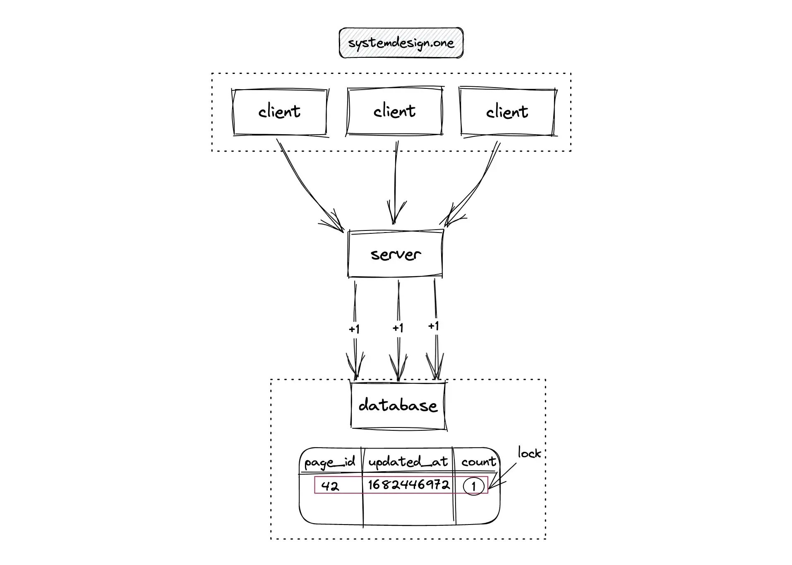
A naive implementation of the counter in the relational database uses a lock (mutex). The lock must be acquired before the count is incremented. Alternatively, the readers-writer lock can be used to reduce the lock granularity and improve the performance of reads. The relational database with locks offers strong consistency. On the downside, this approach is not scalable when there are extremely high concurrent writes 8, 9.
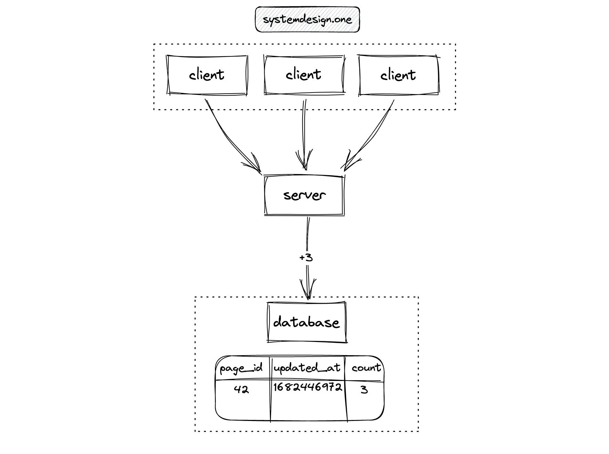
The local cache (memory) of the server can aggregate the count update events. The server can perform a batch update to the database server at periodic intervals. The concurrency and idempotence of data queries can be handled through optimistic locks 5. This approach reduces the latency and storage costs.
The limitation of this method is that there will be a delay in updating the counter resulting in an inaccurate count. The fault tolerance is also reduced because the counter cannot be recalculated when the server crashes before writing to the database server. On top of that, the locks are still required to handle high-concurrency scenarios resulting in degraded performance 1, 10, 11.
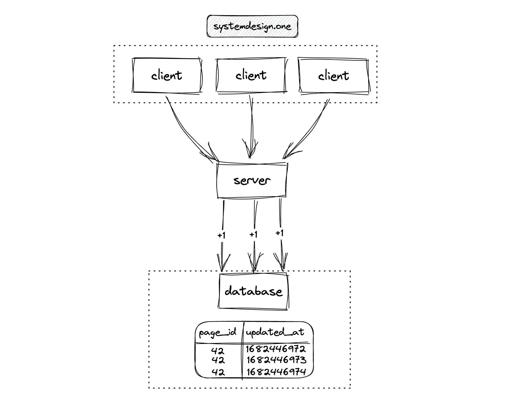
The server can persist the count update events on distinct records of the database. This approach supports extremely high concurrent writes because there is no need for locks. The tradeoff of this approach is slower read queries due to a full table scan and also increased storage costs 1. An optimization to prevent a full table scan on reads is to generate an index on the updated_at (timestamp) column at the expense of slower writes 12.
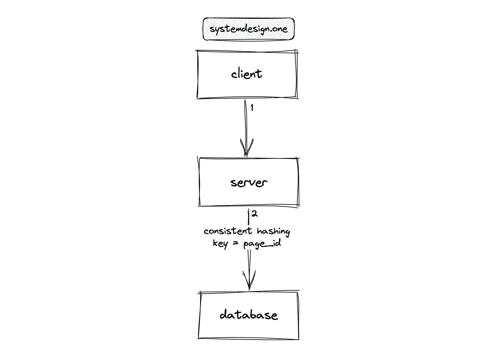
The database should be partitioned (sharded) to scale the distributed counter 1. The consistent hashing algorithm can be used to partition the database. The partitioning of the database only reduces the load on a database instance. In addition, the database instances must be replicated for high availability.
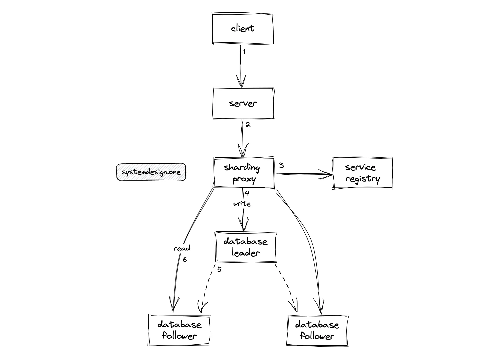
The relational database offers the leader-follower replication topology with failover support. The load on the database can be further evenly distributed among replicas through the segregation of database reads and writes. The writes are routed to the leader instance while the reads are redirected to the follower instances.
A sharding proxy service such as Apache ShardingSphere can be introduced to route traffic between the leader and follower instances. The sharding proxy should be replicated for high availability. The sharding proxy queries the service registry to identify the available instances of the database 1.
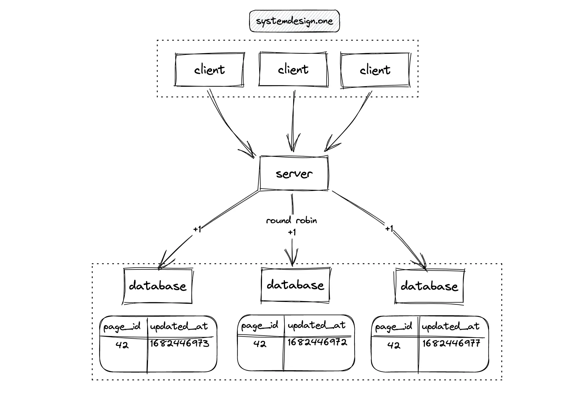
A distributed system offers scalability and high availability at the expense of increased complexity 12. The counter should be partitioned across multiple nodes for scalability. The database server is replicated to prevent a single point of failure (SPOF) 10. The distributed counter is also known as a sharded counter. The probability of lock conflicts is reduced through partitioning. The user ID can be used as the partition key for an even load distribution when a particular web page becomes extremely popular. The high-level workflow of a sharded counter is the following 8, 12, 5, 10, 6, 4:
- multiple counters are initialized in parallel
- updates to the counter are applied on a random shard using the round-robin algorithm
- the counter is fetched by summing up the count on every shard through parallel queries
Despite improved writes, the reads slow down due to the need for querying every shard. This technique is known as the scatter and gather pattern. This approach is optimal only when the data access volume is relatively low 5, 2.
The leader instance of the database accepts the writes and the written data will be asynchronously replicated to follower database instances deployed across multiple data centers. The relational database is transactional. The writes require disk access and are expensive due to data serialization for storage 8.
The distributed counter should support extremely high concurrency and write-heavy load. The leader-follower replication topology of the relational database will result in write congestion and poor latency. The leader-leader replication topology needs an additional service for conflict resolution. On top of that, transaction support is unnecessary for the distributed counter because high availability should be favored against strong consistency 13. It is also difficult to implement idempotency in the replication of count updates across different data centers. In summary, do not use the relational database to build a scalable distributed counter.
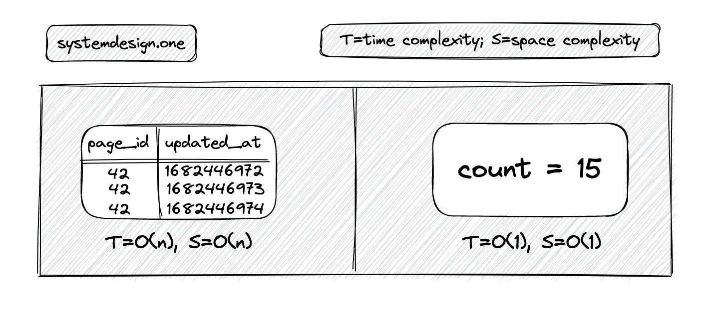
The count of active users in the past is not needed because the counter is supposed to be real-time. The asymptotic complexity for reads of the counter can be improved by removing unnecessary functionality 12. The space complexity becomes constant with an integer counter instead of a relational database counter. The time complexity for writes is constant for both the relational database counter and the integer counter. The primary benefit is that the time complexity for reads becomes constant when an integer counter is used instead of the relational database counter 5.
NoSQL Database
Apache Cassandra is an open-source distributed NoSQL database that supports time series data. The nodes in Cassandra communicate with each other using the gossip protocol. Apache Cassandra supports automatic partitioning of the database using consistent hashing. Besides, the leaderless replication makes the database highly available 1. The storage engine of Cassandra uses Log-structure merge (LSM) tree. The LSM tree-based storage engine offers high-performance writes but slower reads.
Frequent disk access can become a potential performance bottleneck for reads of the distributed counter using Cassandra. An additional cache layer using Redis can be provisioned with the cache-aside pattern to improve the reads. The downside of this approach is that the data consistency of the distributed counter cannot be guaranteed. The probability of an inaccurate counter is higher when the writes to the database succeed but the cache update fails 2, 14.
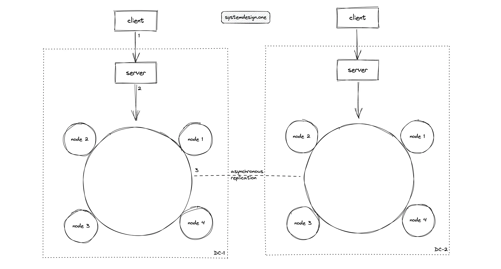
The counter data type in Cassandra can be leveraged to build a distributed counter. Apache Cassandra offers a race-free counter with local latency across multiple data centers. Despite a good choice from the theoretical point of view, the case study at Ably 14 shows that distributed counter in Cassandra shows degraded performance. The problems with the Cassandra counter are the following 14:
- the counter column can only exist in a separate table with entirely counter columns
- the counter table with at least one counter column can never be deleted
- the counter update operations are not idempotent
The lack of idempotency on the update operations of the counter is a showstopper. Moreover, the operational complexity of Cassandra is high 1. In summary, do not use Cassandra to build the scalable distributed counter.
Message Queue
The database is updated on every count update event. This approach is known as the push model. The push model is trivial to implement and offers real-time performance. However, the performance might degrade on extremely high writes 1.
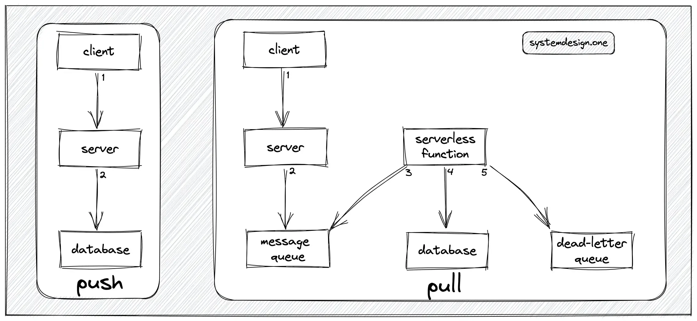
The message queue can be used to buffer the count update events emitted by the client. The database is asynchronously updated at periodic intervals. This approach is known as the pull model. The message queue should be replicated and checkpointed for high availability and improved fault tolerance. The serverless function will query the message queue at periodic intervals and subsequently update the database. A dead-letter queue is introduced for improved fault tolerance. The messages are persisted in the dead-letter queue when the database server is unavailable 1, 2.
The data aggregation through buffering of the count update events in the message queue will reduce bandwidth usage across data centers and improve the throughput of the service 9. The message queue decouples the server and the database to reduce the database load and offer high availability 1. The drawbacks of the pull model are increased operational complexity and inaccurate counter due to the asynchronous processing of data. It is also difficult to implement an exactly one-time delivery on the message queue resulting in an inaccurate distributed counter 9, 15.
Alternatively, the message queue can be configured as a publish-subscribe (pub-sub) server to replicate the counter across multiple data centers. However, it is challenging to implement idempotency on count update events causing an inaccurate counter.
Lambda Architecture
The individual count update events and aggregated count can be stored separately to get the best of both worlds at the expense of increased storage costs 1. The individual count update events are considered the source of truth. The batch service can make use of batch processing services such as Apache Spark to recompute the counter accurately at periodic intervals. The real-time service can take advantage of stream processing services such as Apache Flink to calculate the counter in real time. The real-time distributed counter is fetched by merging the results from both the batch service and real-time service on the fly to calculate an accurate count 9. This architecture is known as Lambda Architecture.
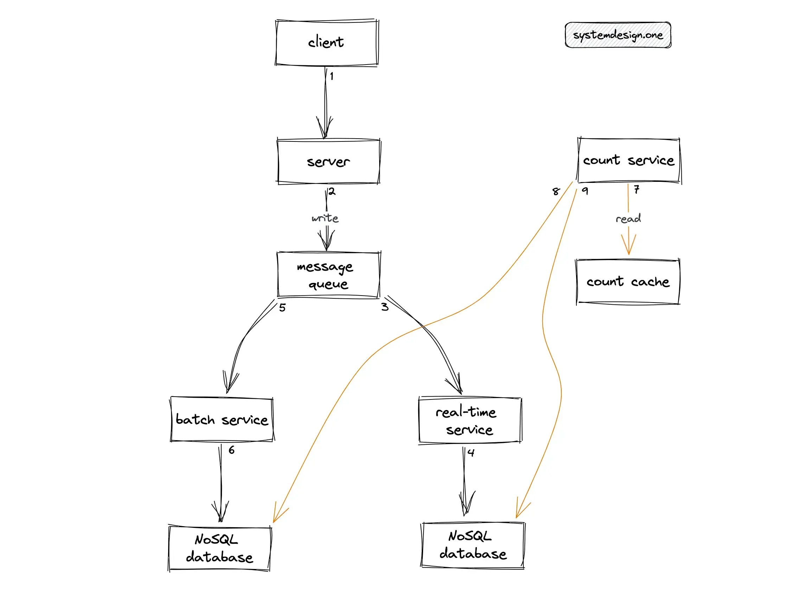
An additional cache layer can be deployed to reduce the load on read queries and improve the latency. The lambda architecture offers scalability and improved fault tolerance. The tradeoffs with lambda architecture are increased operational complexity and elevated storage costs. Alternatively, Kappa architecture can be used to implement the distributed counter but with similar tradeoffs. In summary, do not use the message queue to implement the distributed counter.
Redis
Redis offers extremely high performance and throughput with its in-memory data types. The distributed counter is very write-intensive. So, Redis might be a potential choice to build the distributed counter.
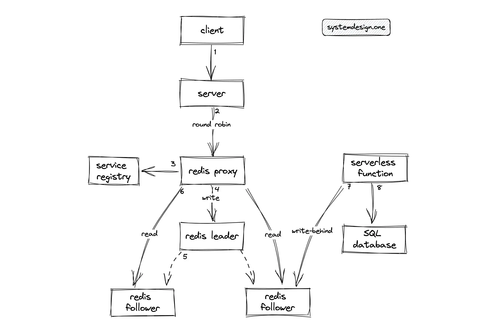
The INCR Redis command is used to increment the counter atomically. Redis can be deployed in the leader-follower replication topology for improved performance. The Redis proxy can be used as the sharding proxy to route the reads to the Redis follower instances and redirect the writes to the Redis leader instance. The hot standby configuration of Redis using replicas improves the fault tolerance of the distributed counter 16. The write-behind cache pattern can be used to asynchronously persist the counter in the relational database for improved durability.
Alternatively, Redis can be deployed in an active-active topology for low latency and high availability. Instead of aggregating the count by querying every shard on read operations, the shards can communicate with each other using the gossip protocol to prevent the read operation overhead. However, this approach will result in unnecessary bandwidth usage and increased storage needs 5.
The count update operations must be idempotent for conflict-free count synchronization across multiple data centers. The drawback of using native data types in Redis is that the count update operations are not idempotent and it is also non-trivial to check whether a command execution on Redis was successful during a network failure, which might result in an inaccurate counter. As a workaround to network failures, the Lua script can be executed on the Redis server to store the user IDs or keep the user IDs in a Redis set data type 5. In conclusion, do not use native data types in Redis to create the distributed counter.
Further system design learning resources
Download my system design playbook for free on newsletter signup:
CRDT Distributed Counter
The distributed counter is a replicated integer. The primary benefit of the eventual consistency model is that the database will remain available despite network partitions. The eventual consistency model typically handles conflicts due to concurrent writes on the same item through the following methods 3, 13:
| Conflict resolution | Description | Tradeoffs |
|---|---|---|
| last write wins (LWW) | timestamp-based synchronization | difficult to synchronize the system clocks |
| quorum-based eventual consistency | wait for an acknowledgment from a majority of the replicas | increased network latency |
| merge replication | merge service resolves the conflicts | prone to bugs and slow in real-time |
| conflict-free replicated data type (CRDT) | mathematical properties for data convergence | conflict resolution semantics are predefined and cannot be overridden |
The Conflict-free Replicated Data Type (CRDT) is a potential option for implementing the distributed counter. The CRDTs are also known as Convergent Replicated Data Types and Commutative Replicated Data Types. The CRDT is a replicated data type that enables operations to always converge to a consistent state among all replicas nodes 17. The CRDT allows lock-free concurrent reads and writes to the distributed counter on any replica node 18. The CRDT internally uses mathematically proven rules for automatic and deterministic conflict resolution. The CRDT strictly employs the following mathematical properties 3, 13:
| Property | Formula |
|---|---|
| commutative | a * b = b * a |
| associative | a * ( b * c ) = ( a * b ) * c |
| idempotence | a * a = a |
The idempotence property in CRDT prevents duplicating items on replication 3, 13. The order of replication does not matter because the commutative property in CRDT prevents race conditions 18.
CRDT-based consistency is a popular approach for multi-leader support because the CRDT offers high throughput, low latency for reads and writes, and tolerates network partitions 13, 19, 20. The CRDT achieves high availability by relaxing consistency constraints 21, 22. The CRDT can even accept writes on the nodes that are disconnected from the cluster because the data updates will eventually get merged with other nodes when the network connection is re-established 17.
The internal implementation of CRDT is independent of the underlying network layer. For example, the communication layer can use gossip protocol for an efficient replication across CRDT replicas 23, 24. The CRDT replication exchanges not only the data but also the operations performed on the data including their ordering and causality. The merging technique in CRDT will execute the received operations on the data. The following are the benefits of using CRDT to build the distributed counter 18, 23, 22, 21:
- offers local latency on read and write operations through multi-leader replication
- enables automatic and deterministic conflict resolution
- tolerant to network partitions
- allow concurrent count updates without coordination between replica nodes
- achieves eventual consistency through asynchronous data updates
An active-active architecture is a data-resilient architecture that enables data access over different data centers. An active-active architecture can be accomplished in production by leveraging the CRDT-based data types in Redis Enterprise 18, 19, 17. The CRDTs in Redis are based on an alternative implementation of most Redis commands and native data types. Some of the popular CRDTs used in the industry are the following 3, 13:
- G-counters (Grow-only)
- PN-counters (Positive-Negative)
- G-sets (Grow-only sets)
G-Counter
The G-Counter (Grow-only) is an increment-only CRDT counter. The major limitations of the G-Counter are that the counter can only be incremented and the number of replicas must be known beforehand. The G-Counter will not be able to satisfy the elastic scalability requirements 23, 22.
PN-Counter
The PN-Counter (Positive-Negative) is a distributed counter that supports increment and decrement operations. The PN-Counter internally uses two count variables for the increments and decrements respectively 25. The PN-Counter supports read-your-writes (RYW) and monotonic reads for strong eventual consistency 22, 21. In addition, the PN-Counter supports an arbitrary number of replicas for elastic scalability 25. In summary, the PN-Counter can be used to build the distributed counter.
Handoff Counter
The Handoff Counter is a distributed counter, which is eventually consistent. The Handoff Counter is relatively more scalable than PN-Counter by preventing the identity explosion problem. The state of the G-Counter is linear to the number of independent replicas that incremented the counter. In other words, each replica in CRDT has a unique identity, and CRDTs work by keeping the identities of the participating replicas.
The set of identities kept on each replica grows over time and might hinder scalability. The Handoff Counter prevents the global propagation of identities and performs garbage collection of transient entries. The Handoff Counter assigns a tier number to each replica to promote a hierarchical structure for scalability 24. In summary, the Handoff Counter can also be used to build the distributed counter.
How does CRDT work?
The CRDT-based counter support count synchronization across multiple data centers with reduced storage, low latency, and high performance. The updates on the counter are stored on the CRDT database in the local data center and asynchronously replicated to the CRDT database in peer data centers 22, 26. The CRDT replicas will converge to a consistent state as time elapses 22, 21. Every count update operation is transferred to all replicas to achieve eventual consistency.
The commutative property of CRDT operations ensures count accuracy among replicas. The following set of guidelines can be followed to ensure a consistent user experience by taking the best advantage of the CRDT-based database 3:
- keep the application service stateless
- choose the correct CRDT data type
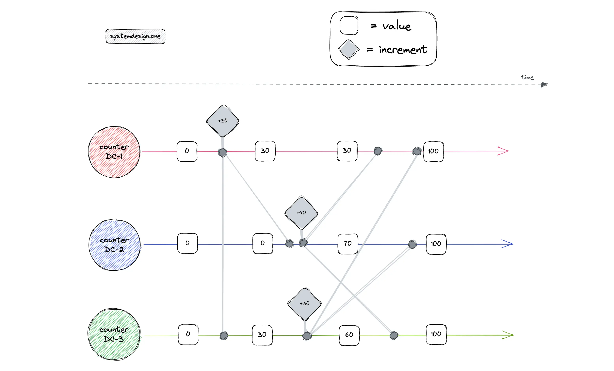
Each replica will keep only its count and count update operations instead of the total count. A replica would never increment the count contained in another replica. The count updates on a particular replica are assumed to occur in a monotonic fashion. The vector clock is used to identify the causality of count update operations among CRDT replicas 18, 3, 13. The following is the rough data schema of the counter CRDT 27, 28, 22:
|
|
The total count is calculated by summing up all the count values. The total count would equal 2500 + 21000 - 817 - 9919.
What Is the Workflow of the Distributed Counter?
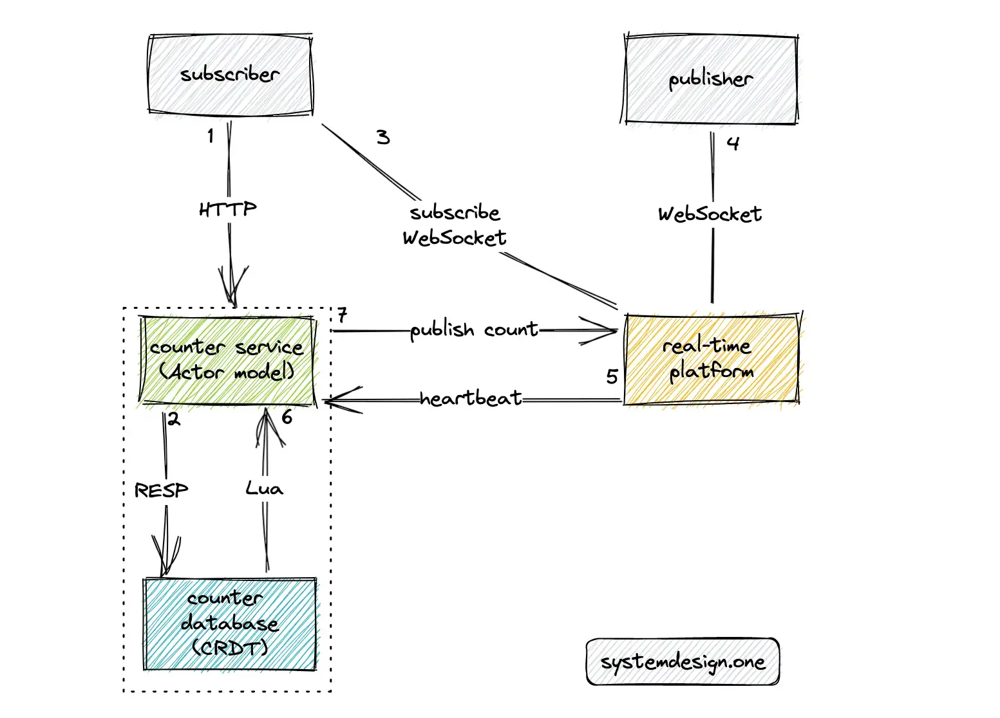
The real-time platform should be leveraged to build a real-time distributed counter. At a very high level, the following operations are executed by the distributed counter:
- the subscriber (user) queries the counter service to fetch the count over the HTTP GET method
- the counter service queries the counter database to determine the count
- the user subscribes to the count of a particular web page through the real-time platform and establishes a WebSocket connection
- the publisher (user) establishes a WebSocket connection with the real-time platform
- the real-time platform emits heartbeat signals to the counter service over UDP at periodic intervals
- the Lua script in the counter database emits an event using the pub-sub pattern whenever there is any update to the distributed counter
- the counter service publishes an event to the real-time platform over the HTTP PUT method
- the real-time platform broadcasts the counter to the subscribers over WebSocket
The actor programming model can be used to implement the counter service. The handler of the actor will decrement the distributed counter when a client WebSocket connection expires. Consistent hashing can be used to redirect the heartbeats from a particular client to the same set of nodes (sticky routing) of the counter service to prevent the creation of duplicate delayed triggers. The hash data type in Redis can be used to store the user IDs 29.
The Redis keyspace notifications can be used instead of the Lua script for notifications at the expense of more CPU power and increased delay. The heartbeat signals must be replaced with HTTP events to publish Facebook likes or reactions through the real-time platform. The article on the real-time presence platform describes in-depth the handling of jittery client connections 30.
Further system design learning resources
Download my system design playbook for free on newsletter signup:
Distributed Counter Design Deep Dive
What Is the Cross-Data Center Workflow for Distributed Counter?
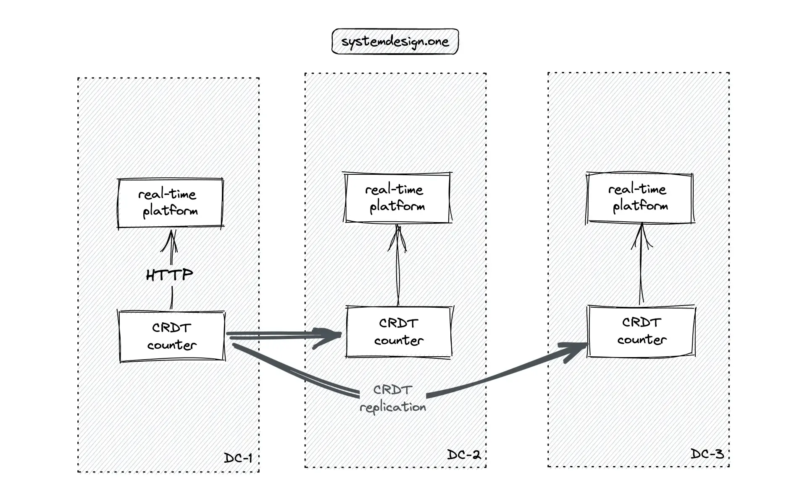
The CRDT counter must be replicated across different data centers for scalability, low latency, and high availability. The CRDT is quite useful in distributed computing and real-time applications where network partitions might occur 31. The CRDT offers predictable outcomes on concurrent write operations because the dataset will eventually converge to a consistent state 18.
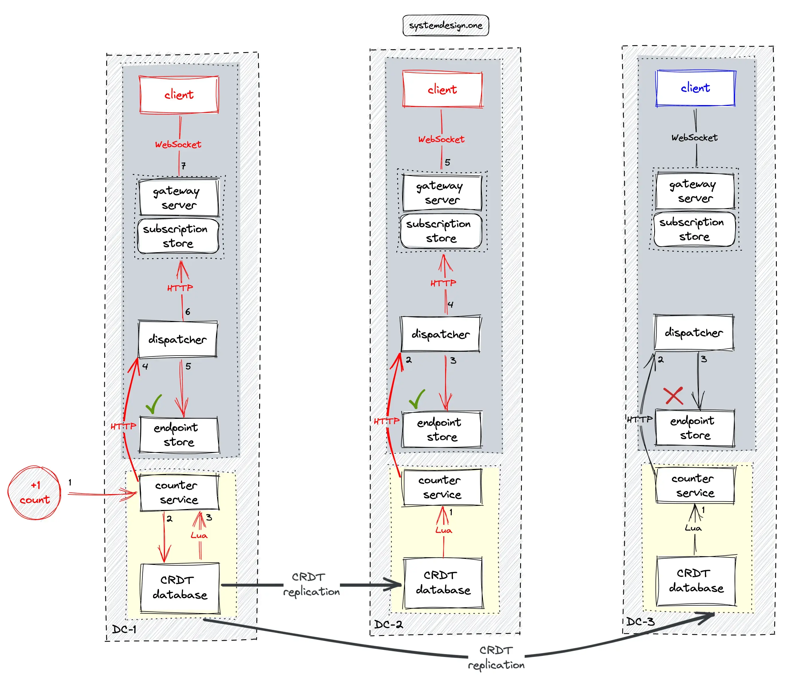
The article on the real-time platform describes in-depth the multi-data center real-time delivery of data. The following operations are executed when the distributed counter is updated 29:
- the dispatcher in the local data center queries the local endpoint store to check if there are any subscribed gateway servers for the particular web page
- the subscribed gateway server queries the local in-memory subscription store to identify the subscribed clients (users)
- the gateway server fans out the distributed counter to the subscribed clients over WebSocket
- the CRDT database replicates changes on the distributed counter to peer data centers
- the Lua script on the CRDT database in the peer data center notifies the counter service whenever there is any update to the distributed counter on replication
The application logic should focus on client connection management and real-time delivery of the distributed counter. The data management and synchronization complexity is delegated to the underlying CRDT database 3
Unread Notification Counter Design
There should be a distributed counter initialized for each user for tracking the unread notification. The user ID can be used as the key for the unread notification distributed counter. The distributed counter should be incremented whenever there are any changes to the subscribed web pages.
The distributed counter for the respective user must be reset to zero when the user clicks the unread notification button. The set of web pages that a user is subscribed to can be kept in the cache for quick processing 2, 32.
Fault Tolerance
Monitoring and health checks on the distributed counter should be implemented. The following entities should be monitored 1:
- number of invocations of the counter service
- hardware resources used such as the CPU and memory
Chaos engineering can be used to test the resiliency of the distributed counter and identify any single point of failure (SPOF). The CRDT database should be tested against the partitioned network scenario. A sample test case for the partitioned network in the CRDT database is the following 17, 3:
- isolate the CRDT database replicas
- deploy the CRDT counter across multiple data centers and increment all of them
- stop the counter and observe the individual counter on each data center
- the counter should only show the local increment
- re-establish the network
- the distributed counter on every data center should show the total count
High Availability
The entire traffic to the distributed counter should be routed through the API Gateway. The API Gateway handles the following cross-cutting concerns 1:
- response caching and logging
- authorization and SSL termination
- circuit breaking and rate limiting
- load balancing
The database can be partitioned using consistent hashing to prevent hot spots. The page ID can be used as the partition key 2. The skewed load on a particular partition due to an extremely popular web page can be avoided by appending a random two-digit decimal number to the page ID (key). The random number would split the writes on the particular key evenly across 100 different keys. The 100 different keys generated will distribute the write load across different partitions. However, the tradeoff is that the read operations will have to query all the keys in different partitions. There is also an additional overhead to maintain the keys.
The services should be stateless and replicated for high availability. New CRDT nodes can be dynamically added to the cluster by backing up an existing node and restoring it as the new node 4. The CRDT database can continue to read and write even if some of the CRDT instances fail providing high availability and disaster recovery. The users can be diverted to another data center when the local data center fails 18.
Scalability
The round-trip time for concurrent clients can be reduced by using Redis pipelining to batch the requests. The performance tests and stress tests should be executed on the distributed counter for the following reasons 1:
- identify performance bottlenecks
- estimate capacity for production deployment
Concurrency
Request coalescing can be performed when concurrent clients try to fetch the distributed counter. Locks should be prevented as locks can become a performance bottleneck on extremely high concurrency 12. Redis is single-threaded and the operations are atomic. Hence, there are no locks or concurrency issues while updating the distributed counter.
Low Latency
The CRDT database is deployed across multiple data centers. The client connection should be routed to the local data center for low latency and reduced network traffic 3.
Summary
The counter is the most primitive distributed object and is a crucial abstraction in distributed computing 24. The different approaches to implementing the distributed counter were uncovered in this article.
What to learn next?
Download my system design playbook for free on newsletter signup:
License
CC BY-NC-ND 4.0: This license allows reusers to copy and distribute the content in this article in any medium or format in unadapted form only, for noncommercial purposes, and only so long as attribution is given to the creator. The original article must be backlinked.
References
-
How to design a distributed counting service? (2020), cnblogs.com ↩︎
-
How to deal with counters with massive data? (2022), zq99299.github.io ↩︎
-
Roshan Kumar, When to use a CRDT-based database (2018), infoworld.com ↩︎
-
Oren Eini, Distributed Counters Feature Design (2014), dzone.com ↩︎
-
Distributed counter in system design (2022), 51cto.com ↩︎
-
Matt Abrams, Big Data Counting: How To Count A Billion Distinct Objects Using Only 1.5KB Of Memory (2012), highscalability.com ↩︎
-
Avichal, Redis Bitmaps - Fast, Easy, Realtime Metrics (2011), blog.getspool.com ↩︎
-
Brett Slatkin, Building Scalable Web Applications with Google App Engine (2008), sites.google.com ↩︎
-
Design a system that tracks the number of likes (2019), medium.com ↩︎
-
Poor man’s distributed counter (2016), medium.com ↩︎
-
How To Update Video Views Count Effectively? (2008), highscalability.com ↩︎
-
Designing a Click Counter, wizardforcel.gitbooks.io ↩︎
-
Bartosz Sypytkowski, An introduction to state-based CRDTs (2017), bartoszsypytkowski.com ↩︎
-
Paddy Byers, Cassandra counter columns: Nice in theory, hazardous in practice (2022), ably.com ↩︎
-
Neha Narkhede, Exactly-Once Semantics Are Possible: Here’s How Kafka Does It (2017), confluent.io ↩︎
-
Read/write splitting in Redis (2022), alibabacloud.com ↩︎
-
Diving into Conflict-Free Replicated Data Types (CRDTs) (2022), redis.com ↩︎
-
Redis Active-Active Geo-Distribution (CRDTs-Based), redis.com ↩︎
-
Roshan Kumar, Picking an Active-Active Geo Distribution Strategy: Comparing Merge Replication and CRDT (2018), infoq.com ↩︎
-
Redis Enterprise vs. Redis Open Source: Why Make the Switch?, redis.com ↩︎
-
PN Counter, hazelcast.com ↩︎
-
Federico Kauffman, CRDTs and Distributed Consistency - Part 1: Building a distributed counter (2022), streaver.com ↩︎
-
Paulo Sergio Almeida, Carlos Baquero, Scalable Eventually Consistent Counters over Unreliable Networks (2013), arxiv.org ↩︎
-
Federico Kauffman, CRDTs and Distributed Consistency - Part 2: Building a distributed counter (2022), streaver.com ↩︎
-
Martin Kleppmann, CRDTs and the Quest for Distributed Consistency (2018), infoq.com ↩︎
-
Mathias Meyer, Playing with Riak and CRDTs - Counters (2012), paperplanes.de ↩︎
-
Marc Shapiro, Nuno Preguiça, Carlos Baquero, Marek Zawirski, A comprehensive study of Convergent and Commutative Replicated Data Types (2011), inria.hal.science ↩︎
-
Neo Kim, Live Comment System Design (2023), systemdesign.one ↩︎
-
Neo Kim, Real-Time Presence Platform System Design (2023), systemdesign.one ↩︎
-
Federico Kauffman, CRDTs and Distributed Consistency - Part 3: Building a distributed counter (2022), streaver.com ↩︎
-
How to design a non-counting system under 500,000 QPS? (2022), zq99299.github.io ↩︎